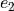

Graph Data Model
One pipeline used to generate graph uses weights sequences and degree sequences measured from real-life datasets (presented in the benchmark/datasets section). We assume that anomalies are present in those datasets we use.
Generation
We generate the graphs using a Havel Hakimi to fit the degree sequence, then perform random edge swaps to ensure that graph is uniformly randomly picked.
The steps are:
Read the input parameters for the models
Read the degree sequence and weight sequence
Generate the anomaly using an Erdos Renyi model with the input parameters
Place anomaly on normal graph: Initialize the list selected_nodes, then for each node
 in :
in :step 1: uniformly pick in a node with degree , where is the degree of
step 2: if is not in selected_nodes, add it to the list, else, empty selected_nodes and start over at step 1.
step 3 : get the degree of the normal graph .
We then note the updated degree sequence, that will now be the degree sequence of the “normal” graph.
Generate the graph :
First generate a graph using a Havel-Hakimi model to fit the degree sequence
Then perform random edge swaps (where is the number of edges of the graph) to ensure that the graph is randomly uniformly picked
Generate
 as the union of and
as the union of and If
is a simple graph, then return , else:For each multiple edge
 in , do:
in , do:Choose between graphs and with a probability
In chosen graph, pick an edge  uniformly at random
Check that satisfies the following conditions:

swapping
and reduces the number of multiple edges by at least one
If so, perform edge swap, else go to the beginning of the process for
again.
return
Weights
When is generated, assign weights to the nodes by shuffling the weight sequence ,
then taking the first values for edges, and the rest of the values for edges weights.